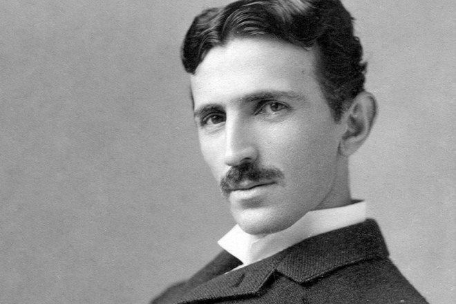
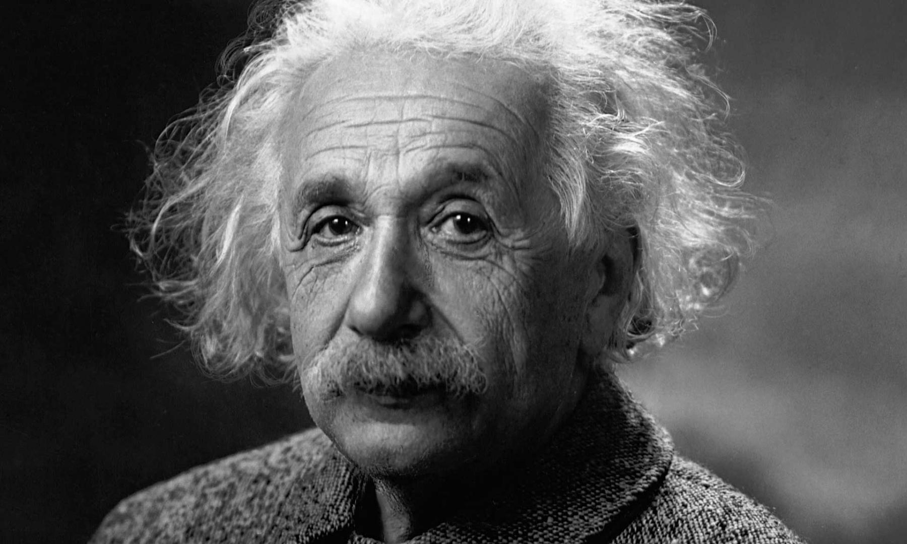
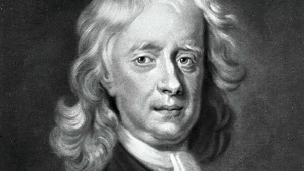
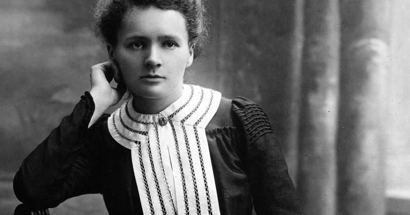

Изобретатель в области электротехники и радиотехники сербского происхождения. Николу называют отцом современного электричества. Он сделал множество открытий, и изобретений получив более 300 патентов на свои творения во всех странах, где работал. Никола Тесла был не только физиком теоретиком, но и блестящим инженером, создававшим и испытывавшим свои изобретения. Тесла открыл переменный ток, беспроводную передачу энергии, электричества, его работы привели к открытию рентгена, создал машину, которая вызывала колебания поверхности земли. Никола предсказывал наступление эры роботов, способных выполнять любую работу.

Немецкий физик, создатель общей теории относительности. Предположил, что все тела не притягивают друг друга, как считалось со времен Ньютона, а искривляют окружающее пространство и время. Эйнштейн написал больше 350 работ по физике. Является создателем специальной (1905) и общей теории относительности (1916), принципа эквивалентности массы и энергии (1905). Разработал множество научных теорий: квантового фотоэффекта и квантовой теплоемкости. Вместе с Планком, разработал основы квантовой теории, представляющие основой современной физике.

Один из отцов классической физики. Обосновал движение планет Солнечной системы вокруг Солнца, а также наступление приливов и отливов. Ньютон сделал немало открытий в области оптики и теории цвета. Им были разработаны многие физические и математические теории. Научные труды выдающегося ученого во многом определяли время и часто были непонятны современникам. Он создал фундамент для современной физической оптики. Верхом его работ является известный закон всемирного тяготения.

Физик и химик польского происхождения. Совместно с мужем открыла элементы радий и полоний. Занималась проблемами радиоактивности. Помимо двух Нобелевских премий, Кюри была удостоена медали Бертло Французской академии наук (1902), медали Дэви Лондонского королевского общества (1903) и медали Эллиота Крессона Франклиновского института (1909). Она была членом 85 научных обществ всего мира, в том числе Французской медицинской академии, получила 20 почетных степеней. С 1911 г. и до смерти Кюри принимала участие в престижных Сольвеевских конгрессах по физике, в течение 12 лет была сотрудником Международной комиссии по интеллектуальному сотрудничеству Лиги Наций.